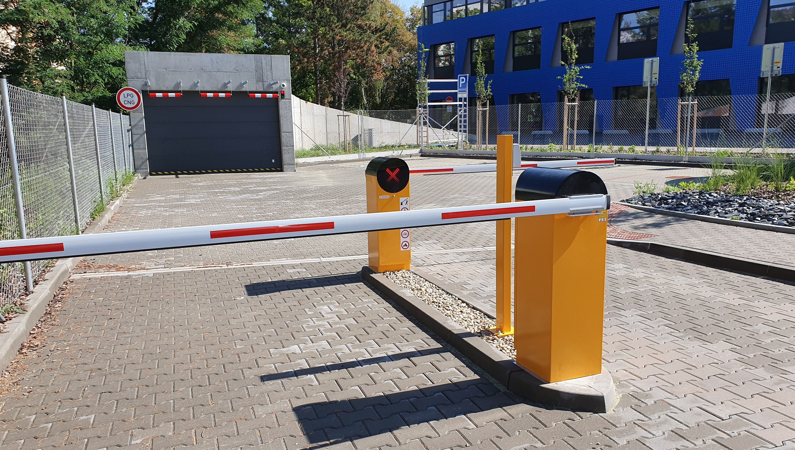

Popis projektu:
Projekt by měl fungovat jako jakási brána (např: na parkoviště, k obchodu). Auto přijíždí k bráně. Zde kamera naskenuje SPZ auta. Pokud se jedná o validní SPZ, tak kamera pošle signál a otevře se závora. Auto tak může pokračovat dále.
Princip funkce:
Prostor před kamerou je konstantně snímán pomocí makery ESP-32, jež je připojena k Arduinu a přes převaděč k externímu zdroji elektrické energie. Kamera je připojina i k určité síti, na kterou je připojen i externí počítač, na kterém běží program v jazyku Python. Program je připojen na IPv4 adresu kamery a bere z ní obraz, který následně zpracovává. Z videa bere číslice a písmena a pokud se pak jedná o platnou SPZ značku, počítač pošle signál do Arduina, který signál následně předá servo motůrku. Motůrek po převzetí signálu otevře závoru o 90°.